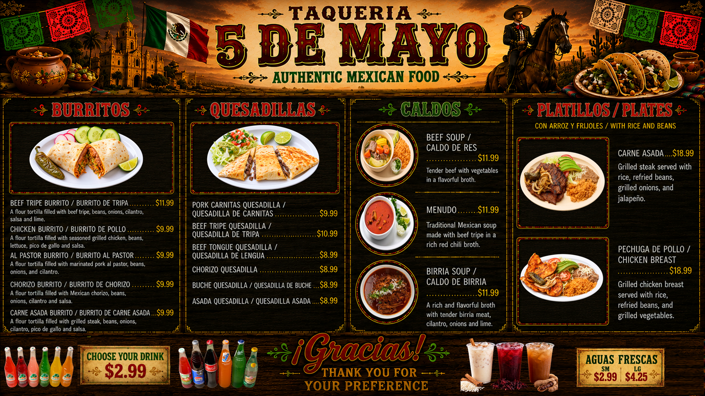
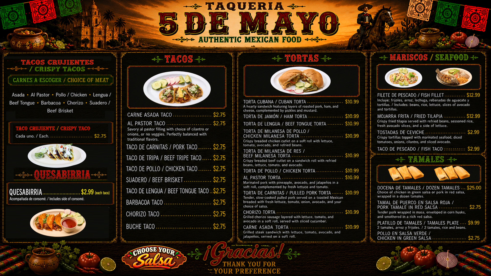

AUTHENTIC MEXICAN FOOD
🌮
VIEW MENU
VER MENÚ
📞
CALL NOW
LLAMAR AHORA · (816) 331-5677
📱
ORDER BY PHONE
ORDENAR POR TELÉFONO
🔴
DOORDASH
ORDER ONLINE · ORDENAR EN LÍNEA
🟠
GRUBHUB
ORDER ONLINE · ORDENAR EN LÍNEA
🟢
UBER EATS
ORDER ONLINE · ORDENAR EN LÍNEA
📍
DIRECTIONS
CÓMO LLEGAR
OUR MENU
NUESTRO MENÚ


↑ BACK TO TOP / REGRESAR
CINCO DE MAYO TAQUERÍA Y CARNICERÍA
524 N Scott Ave
Belton, MO 64012
(816) 331-5677